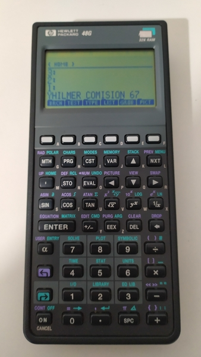

CALCULADORA HP48

La compañia HP ( Hewlett-Packard ) fabricó la serie de Caculadoras 48 entre los años
1990 y 2003.
Existen 3 modelos de estas calculadoras:
48G, 48G+ y 48GX. (en mi caso conservo 2 calculadoras 48G)
Especificaciones mas importantes:
- CPU arquitectura: Saturn (Este procesador fue el mas usado por HP durante varios años en sus calculadoras HP)
- Resolución de la pantalla: 131×64 píxeles
- Puertos de comunicación: RS-232 (Puerto serial) de 4 pines o Puerto Infrarrojo
- Todas las calculadoras de la familia 48G tienen una memoria ROM de 512 Kilobytes
- Editor de ecuaciones: Permite ingresar y ver las ecuaciones como aparecen en el papel
- Esta calculadora permite programarla a través de 2 lenguajes: USER-RPL y SYSTEM-RPL.

Este es el manual de la Calculadora HP, conservo un ejemplar que está en Ingles y esta
dividido en 30 secciones las cuales nombro a continuación:
1.- El teclado y la Pantalla.
2.- Como introducir y editar Objetos.
3.- La pila.
4.- Modo.
5.- Memoria.
6.- Plantillas de Entrada y Lista de Opciones.
7.- El equation writer.
8.- El Matrix Writer.
9.- Objetos Gráficos.
10.- Objetos de unidades de medidas.
11.- Como utilizar funciones Matemáticas.
12.- Funciones de números Reales y Complejos.
13.- Vectores y transformadas.
14.- Matrices y Algebra Lineal.
15.- Operaciones Aritmeticas y Bases Numéricas.
16.- Fecha, Hora y Fracciones Aritmeticas.
17.- Listas y secuencias.
18.- Resolución de ecuaciones.
19.- Ecuaciones Diferenciales.
20.- Calculo y manipulación simbólica.
21.- Análisis de datos y estadísticas.
22.- Representaciones gráficas.
23.- Tipos de Representaciones gráficas.
24.- Operaciones de representaciones basicas avanazadas.
25.- La biblioteca de ecuaciones.
26.- La organización del Tiempo.
27.- Como transmitir e imprimir datos
28.- Bibliotecas.
29.- Como programar la HP.
30.- Como personalizar la HP.